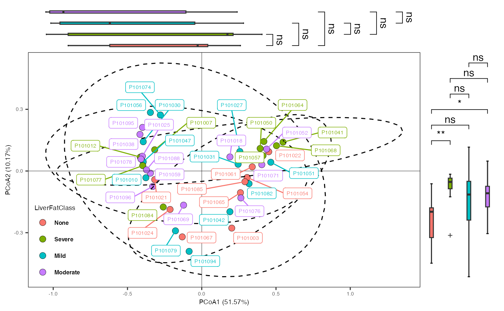

Show the result of Ordination using scatterplot.
plot_ord(
reslist,
variable,
variable_name = NULL,
variable_color = NULL,
var_shape = NULL,
var_shape_name = NULL,
var_shape_value = NULL,
display_test = FALSE,
sample_label = FALSE,
ellipse_type = c("none", "ellipse", "ellipse_CI" ,
"ellipse_groups", "ellipse_line"),
sideboxplot = FALSE,
point_size = 3,
line_size = 0.3,
ellipse_line_size = 0.5,
geom_text_size = 5,
theme_text_size = 8,
theme_strip_size = 6,
legend_position = c(0, 0),
legend_justification = c(-0.02, -0.02),
legend_title_size = 7,
legend_text_size = 6,
test_annotate_size = 4,
geom_label_repel_size = 2,
...)(Required). list. Results of Ordination.
(Optional). character. the variable for x-axis.
(Optional). character. variable' names (default: NULL).
(Optional). character. the color for plotting (default: NULL).
(Optional). character. the variable for shape' column (default: NULL).
(Optional). character. the shape' names (default: NULL).
(Optional). character. the shape values (default: NULL).
(Optional). logical. whether to show pvalue of PERMANOVA & beta dispersion (default: FALSE).
(Optional). logical. whether to show sample names (default: FALSE).
(Optional). character. how to show scatter plot, including "none", "ellipse", "ellipse_CI" , "ellipse_groups" and "ellipse_line" (default: "none").
(Optional). logical. whether to show side boxplot of axis (default: FALSE).
(Optional). numeric. point size of the scatterplot (default: 3).
(Optional). numeric. line size (default: 0.3).
(Optional). numeric. ellipse line size (default: 0.5).
(Optional). numeric. geom: text size (default: 5).
(Optional). numeric. main theme: text size (default: 8).
(Optional). numeric. main theme: strip size (default: 6).
(Optional). numeric. main legend: position (default: c(0, 0)).
(Optional). numeric. main legend: justification (default: c(-0.02, -0.02)).
(Optional). numeric. main legend: title size (default: 7).
(Optional). numeric. main legend: text size (default: 6).
(Optional). numeric. PERMANOVA text size (default: 4).
(Optional). numeric. main geom: label repel size (default: 2).
additional parameters.
A scatterplot with boxplot to show the results of ordination
# \donttest{
data("Zeybel_2022_gut")
ps_zeybel <- summarize_taxa(Zeybel_2022_gut, level = "Genus")
ord_result <- run_ord(
object = ps_zeybel,
variable = "LiverFatClass",
method = "PCoA")
#> 'adonis' will be deprecated: use 'adonis2' instead
pl <- plot_ord(
reslist = ord_result,
variable = "LiverFatClass",
ellipse_type = "ellipse",
sideboxplot = TRUE,
sample_label = TRUE
)
#> Warning: Ignoring unknown aesthetics: fill
#> Scale for fill is already present.
#> Adding another scale for fill, which will replace the existing scale.
pl

# }